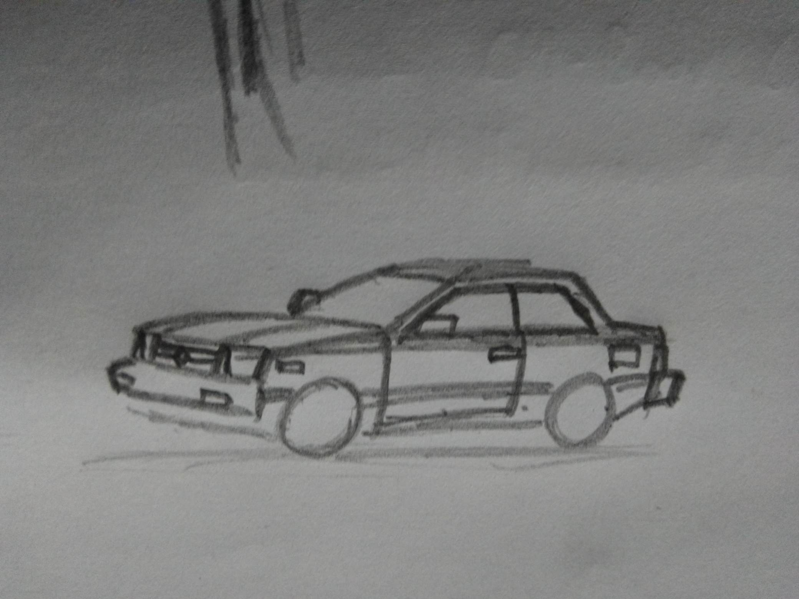
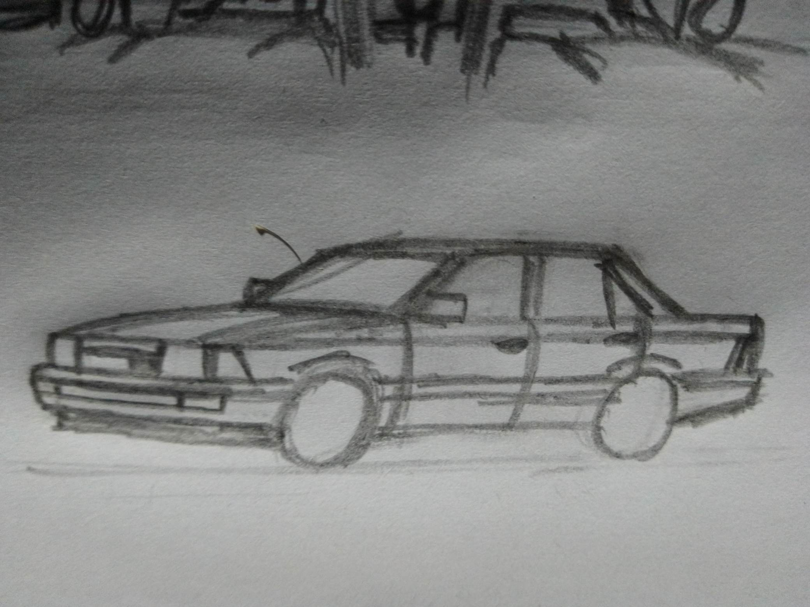

es un auto compacto creado por el fabricante japones kyushu, se inspira en el nissan tsuru, sunny o sentra y es el auto del protagonista de la historieta unusual driver. El modelo se produjo entre los años 1983 hasta 2017 a través de 3 generaciones.

 se produjo entre 1982 y 1985, se vendio en carrocerias sedan y coupé.
se produjo entre 1986 y 1990, se vendio en carrocerias guayin, hatchback de 3 puertas, sedan y coupé.
se produjo entre 1991 y 1996, se vendio en carrocerias sedan y coupé, sin embargo, en latinoamerica se produjo de 1992 hasta 2017, recibiendo un rediseño en el año 2001, donde perdio muchas caracteristicas de comfort y seguridad debido a que la region paso por multiples crisis economicas durante inicios de los 2000, por lo que el modelo se volvio amado entre taxistas, policias, repartidores, macanicos, jovenes y familias por igual.
Usted se encuentra en la página 3
| Pagina 1 (historieta) | | Pagina 2 (kyushu) | | Pagina 3 |